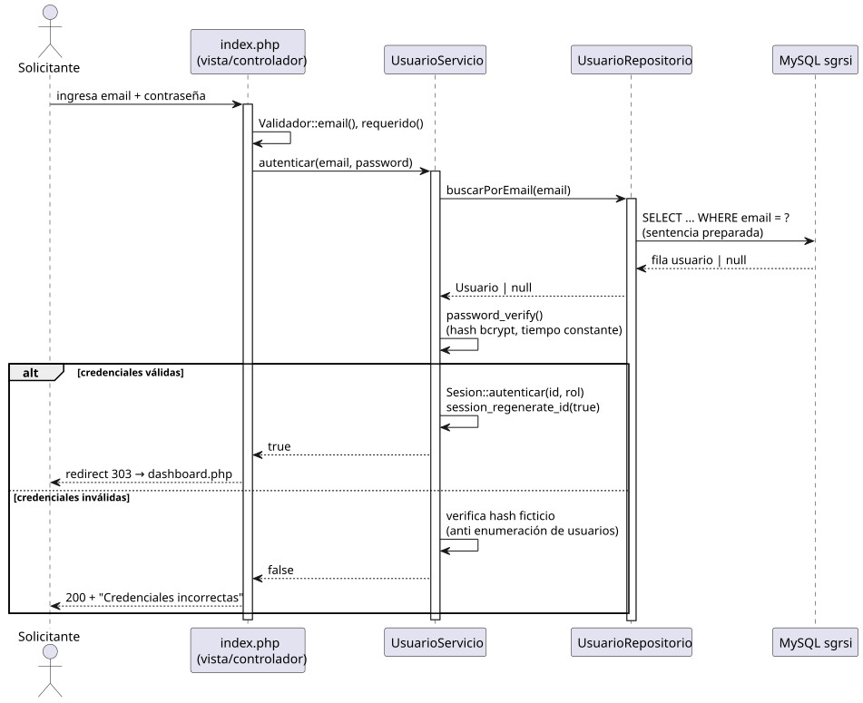
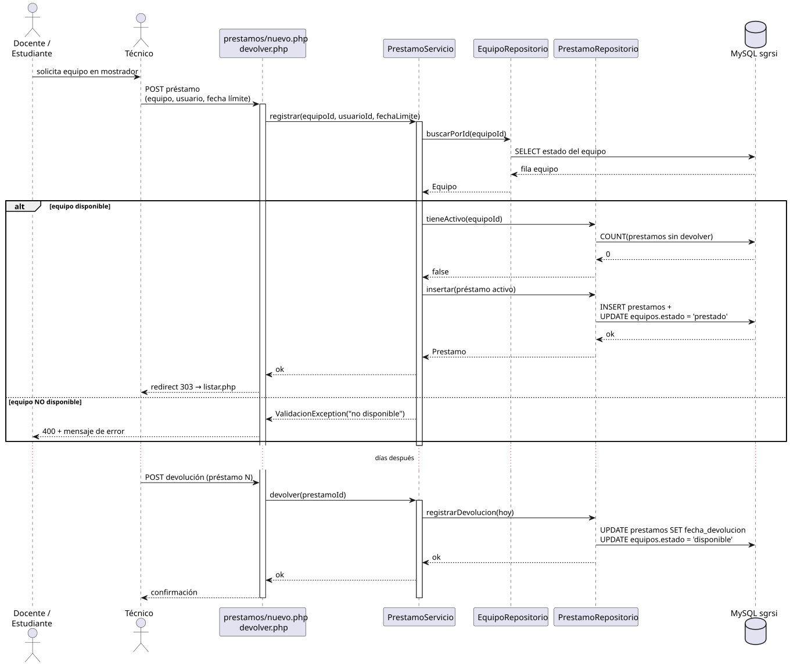
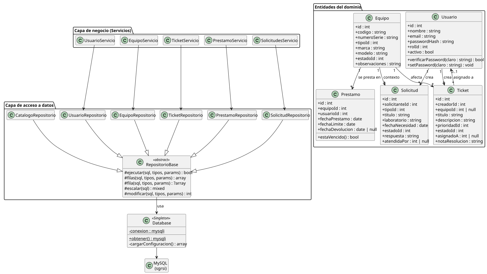
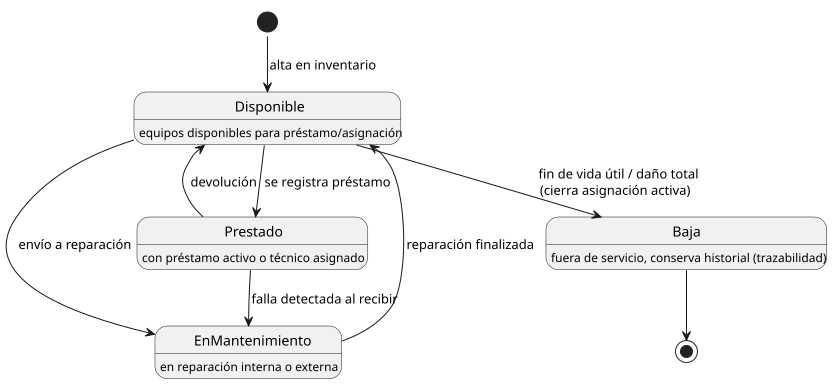
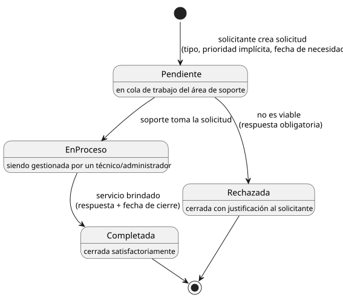
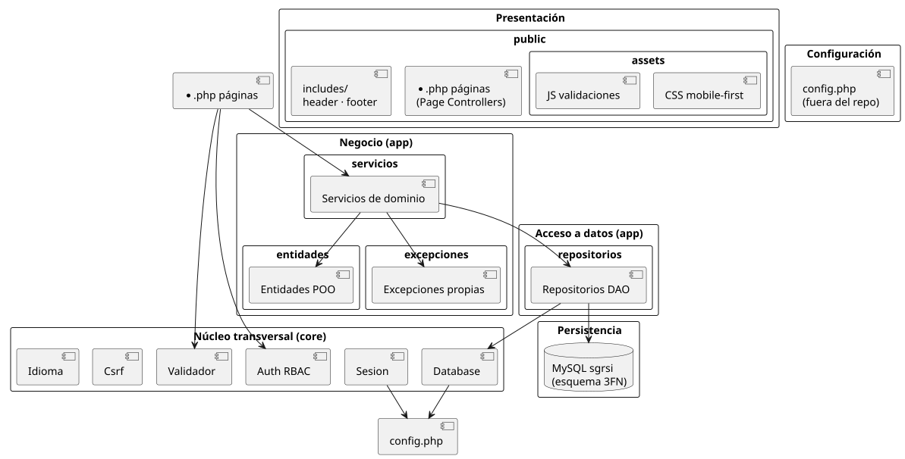

Validación metodológica — revisión del modelo de desarrollo elegido
2.
Modelo Esencial — modelo ambiental, lista de acontecimientos y modelo de comportamiento
3.
Diseño UML — casos de uso con planillas, diagrama de clases y diagramas de estados
4.
Diagrama de paquetes — organización arquitectónica
5.
Gestión de riesgos — identificación y plan de contingencia
6.
Seguimiento de la planificación — cronograma (Gantt) de la segunda entrega
7.
Avance del producto — guion del video demostrativo (2 minutos)
8.
Sincronización — estado del repositorio Git
1 · Validación metodológica
1.1 Recordatorio: decisión original (primera entrega)
En la primera entrega PixelMind eligió el modelo de desarrollo incremental: el producto se construye en incrementos funcionales que aportan valor temprano al cliente, intercalando especificación, diseño e implementación en cada ciclo, como describe Sommerville (2011). Cada entrega académica de la letra coincide con un incremento del sistema.
1.2 Criterios de validación aplicados
Revisamos si el modelo sigue siendo adecuado contrastando la realidad del proyecto contra los criterios habituales de selección de proceso (Sommerville, caps. 2 y 22):
Criterio
Situación real del proyecto
¿Sigue favoreciendo al incremental?
Estabilidad de requisitos
La letra fija requisitos por entregas; hubo ajustes menores de alcance entre entregas.
Sí. El incremental absorbe cambios redefiniendo el próximo incremento sin descartar trabajo previo.
Necesidad de entregas tempranas
El docente evalúa avances parciales; el cliente necesita ver funcionalidad pronto.
Sí. Cada incremento entrega software operativo (login, inventario, tickets…).
Tamaño y madurez del equipo
Equipo pequeño (3 integrantes), sin experiencia en procesos pesados.
Sí. Evita la burocracia de cascada puro o RUP completo.
Riesgo técnico
Bajo-moderado: stack conocido (PHP + MySQL + Bootstrap); complejidad en seguridad y alcance.
Sí. Riesgos gestionados por incremento (sección 5).
Trazabilidad y calidad
Apareció necesidad de mayor formalidad: UML, planillas, métricas.
Sí, con ajuste: artefactos de diseño por incremento (ver 1.3).
Evolución de la arquitectura
Riesgo clásico del incremental: degradar la estructura acumulando incrementos.
Mitigado: arquitectura de 3 capas estable desde el inicio (sección 4).
1.3 Conclusión de la revisión
El modelo incremental sigue siendo el adecuado, por lo que NO se reemplaza. De esta validación surgen tres mejoras de proceso para este incremento:
Formalización del diseño: cada incremento incluye ahora sus diagramas UML actualizados (este documento) antes de codificar los módulos nuevos.
Gestión explícita de riesgos: registro vivo con revisión al inicio de cada incremento (sección 5).
Seguimiento cuantitativo: Gantt con % de avance por actividad para detectar desvíos a tiempo (sección 6).
Incrementos planificados vs. entregas académicas: Incremento 1 = relevamiento y planificación (1ª entrega) · Incremento 2 = núcleo del sistema + diseño (esta entrega: autenticación RBAC, inventario, tickets, préstamos, solicitudes y usuarios operativos) · Incremento 3 = calidad, testing, métricas y manuales (3ª entrega).
2 · Modelo Esencial
El modelo esencial describe qué hace el sistema con independencia de la tecnología: qué fenómenos del entorno debe observar y a qué debe responder. Se compone del modelo ambiental, la lista de acontecimientos y el modelo de comportamiento.
2.1 Modelo ambiental
Elemento
Descripción
Propósito del sistema
Gestionar el inventario de equipos informáticos, los préstamos, las incidencias técnicas y las solicitudes de servicio del ITI, centralizando información que hoy se dispersa en planillas y pedidos verbales.
Frontera del sistema
Todo lo que ocurre dentro del navegador/servidor SGRSI. Queda FUERA: la reparación física de equipos, la compra de insumos y la gestión académica (notas, asistencia).
Solicitantes (docentes/estudiantes)
Reportan incidencias, piden préstamos de equipos y solicitan servicios (laboratorios, instalaciones, software). Consultan el estado de sus pedidos.
Técnicos de soporte
Administrar inventario, asignar equipos, registrar préstamos/devoluciones, atender tickets e intervenciones.
Administrador
Además de lo técnico: gestiona usuarios y roles, atiende solicitudes de servicio y monitorea métricas del dashboard.
Eventos temporales
El paso del tiempo dispara respuestas: vencimiento de préstamos (estado vencido) y cálculo de métricas por fecha.
Restricciones
Entorno XAMPP (Apache + MySQL), acceso web local institucional, interfaz en español e inglés, seguridad exigida (RBAC, bcrypt, validaciones server-side).
2.2 Lista de acontecimientos
Acontecimientos externos y temporales a los que el sistema debe responder:
#
Tipo
Acontecimiento
Respuesta del sistema
A1
Externo
Un usuario ingresa sus credenciales.
Valida contra hash bcrypt, abre sesión con rol correspondiente o rechaza con mensaje genérico.
A2
Externo
Una persona se registra por primera vez.
Crea cuenta con rol solicitante, valida email único y contraseña segura.
A3
Externo
Soporte da de alta un equipo en inventario.
Genera código, registra tipo/marca/modelo/serie, estado inicial «disponible».
A4
Externo
Soporte cambia el estado de un equipo (mantenimiento/baja).
Actualiza estado; si es baja, cierra la asignación activa (trazabilidad).
A5
Externo
Se solicita el préstamo de un equipo.
Verifica disponibilidad, crea préstamo activo con fecha límite y marca equipo «prestado».
A6
Temporal
Vence la fecha límite de un préstamo.
El préstamo pasa a «vencido» y queda visible como alerta para soporte.
A7
Externo
El solicitante reporta una incidencia.
Crea ticket pendiente con prioridad y lo deja en cola visible para soporte.
A8
Externo
Soporte toma y trabaja una incidencia.
Pasa a «en proceso», asigna técnico y registra intervenciones con historial.
A9
Externo
La incidencia queda resuelta.
Exige nota de resolución, cierra el ticket y registra fecha/hora.
A10
Externo
Se recibe una solicitud de servicio.
Crea solicitud pendiente con tipo, laboratorio y fecha de necesidad.
A11
Externo
Soporte/administrador atiende la solicitud.
Pasa a «en proceso» y al finalizar registra respuesta obligatoria y cierre.
A12
Externo
El administrador gestiona un usuario.
Alta/edición de usuarios y roles; desactivación sin borrar historial.
A13
Externo
El usuario cierra sesión o expira la inactividad.
Destruye la sesión y redirige al login.
2.3 Modelo de comportamiento
El comportamiento del sistema se modela con diagramas de secuencia (interacciones actor-sistema por capa) y diagramas de estados (ciclo de vida de los objetos clave, sección 3.4).

Fig. 2.1 — Secuencia: autenticación de usuario (muestra las 3 capas: vista, servicio, repositorio, BD).

Fig. 2.2 — Secuencia: registro de préstamo con verificación de disponibilidad y su devolución posterior.
3 · Diseño UML
3.1 Diagrama de casos de uso
Fig. 3.1 — Casos de uso del SGRSI por actor. Los casos protegidos incluyen autenticación; el registro extiende al solicitante sin cuenta.
Los actores reflejan los roles reales del sistema (RBAC): solicitante (docentes y estudiantes), técnico de soporte y administrador, quien hereda las capacidades técnicas y agrega gestión de usuarios, solicitudes y métricas.
Permite ingresar al sistema identificándose con email y contraseña.
Precondiciones
Cuenta existente y activa; usuario no autenticado aún.
Flujo principal
1. El usuario accede a la pantalla de login. 2. Ingresa email y contraseña (el formulario valida formato en cliente y servidor). 3. El sistema busca el usuario por email. 4. Verifica la contraseña contra el hash bcrypt. 5. Regenera el ID de sesión, guarda id/rol en sesión y muestra el dashboard.
Flujos alternativos
4a. Email inexistente o contraseña incorrecta: mensaje genérico «Credenciales incorrectas» (evita enumeración de usuarios). 2a. Campos vacíos o email inválido: errores por campo sin recargar. b. Cuenta desactivada: acceso denegado informando contacto con administración.
Postcondiciones
Sesión activa con rol cargado; registro de último acceso; o bien estado sin cambios si falló.
CU-02 · Reportar incidencia (ticket)
Actor principal
Solicitante.
Descripción
Reporta una falla de un equipo para que soporte la atienda.
Precondiciones
Sesión iniciada como solicitante.
Flujo principal
1. El solicitante abre «Nueva incidencia». 2. Completa título, descripción, prioridad y opcionalmente el equipo afectado. 3. El servidor valida datos y crea el ticket en estado pendiente. 4. El sistema confirma y redirige al detalle del ticket (patrón PRG).
Flujos alternativos
3a. Datos inválidos: respuesta HTTP 400 con errores por campo. 2a. Si no existe el equipo buscado: puede reportar sin equipo asociado.
Postcondiciones
Ticket visible en cola de soporte y en la lista personal del creador.
CU-03 · Atender incidencia
Actor principal
Técnico / Administrador.
Descripción
Gestión del ciclo de atención de un ticket hasta resolverlo.
Precondiciones
Ticket existente; actor con rol técnico o administrador.
Flujo principal
1. Abre el ticket desde la lista. 2. Lo pasa a en proceso (queda asignado). 3. Registra intervenciones intermedias (quedan con historial fechado). 4. Al finalizar marca resuelto; el sistema exige nota de resolución.
Flujos alternativos
4a. Intento de resolver sin nota: validación rechaza el cambio. b. Ticket ajeno/inexistente: 404 o 403 según corresponda.
Postcondiciones
Ticket cerrado con resolución documentada; métricas actualizadas.
CU-04 · Registrar préstamo de equipo
Actor principal
Técnico (a pedido del docente/estudiante).
Descripción
Entrega en préstamo un equipo disponible con fecha límite.
Precondiciones
Sesión técnica; equipo existente; usuario receptor registrado.
Flujo principal
1. Abre «Nuevo préstamo». 2. Selecciona equipo, usuario y fecha límite. 3. El sistema verifica que el equipo esté disponible y sin préstamo activo. 4. Crea el préstamo activo y cambia el equipo a prestado.
Flujos alternativos
3a. Equipo no disponible: validación 400 explicando el motivo. 2a. Fecha límite anterior a hoy: rechazo por validación.
Postcondiciones
Préstamo activo registrado; equipo no prestable hasta devolución.
CU-05 · Crear solicitud de servicio
Actor principal
Solicitante.
Descripción
Pide formalmente un servicio al área (instalación de software, armado de laboratorio, soporte para evento).
Precondiciones
Sesión iniciada.
Flujo principal
1. Abre «Nueva solicitud». 2. Elige tipo, indica título, descripción, laboratorio y fecha de necesidad. 3. El servidor valida y crea la solicitud pendiente. 4. Confirmación y redirección al detalle.
Flujos alternativos
3a. Fecha de necesidad pasada o campos faltantes: errores de validación. b. Sin sesión: redirección a login.
Postcondiciones
Solicitud en cola para atención del área de soporte.
CU-06 · Atender solicitud de servicio
Actor principal
Administrador / Técnico autorizado.
Descripción
Gestiona la solicitud hasta completarla o rechazarla con respuesta.
Precondiciones
Solicitud pendiente; rol con permiso de atención.
Flujo principal
1. Abre la solicitud desde la lista. 2. La pasa a en proceso. 3. Ejecuta el trabajo y marca completada escribiendo la respuesta obligatoria. 4. El sistema registra atendente y fecha de cierre.
Flujos alternativos
2-4a. Rechazo: exige respuesta justificativa antes de cerrar como rechazada. b. Respuesta vacía al cerrar: validación impide avanzar.
Postcondiciones
Solicitud cerrada con trazabilidad completa (quién, cuándo, qué respondió).
3.3 Diagrama de clases (opcional)
Refleja la implementación real: entidades del dominio, servicios (reglas) y repositorios (acceso a datos con sentencias preparadas), sobre una conexión única Database (Singleton):

Fig. 3.2 — Clases principales del SGRSI y sus relaciones (multiplicidades según el esquema 3FN).
3.4 Diagramas de estados
Equipo

Fig. 3.3 — Ciclo de vida del equipo: disponible, prestado, en mantenimiento y baja (conserva historial).
Ticket de incidencia
Fig. 3.4 — Estados del ticket: pendiente, en proceso (con intervenciones) y resuelto.
Préstamo
Fig. 3.5 — El evento temporal de vencimiento pasa el préstamo activo a «vencido».
Solicitud de servicio

Fig. 3.6 — Solicitud: pendiente, en proceso, completada o rechazada (respuesta obligatoria al cerrar).
4 · Diagrama de paquetes
La organización por paquetes materializa la arquitectura en tres capas: la presentación nunca accede a la base de datos directamente; siempre pasa por servicios y repositorios. Las dependencias apuntan solo hacia abajo, lo que facilita evolucionar cada capa sin romper las demás.

Fig. 4.1 — Paquetes del SGRSI y sus dependencias (coinciden con la estructura real de carpetas del repositorio).
5 · Gestión de riesgos
Seguimos el proceso de Sommerville: identificación → análisis → planificación → monitoreo. Probabilidad e impacto se estiman en escala Alta / Media / Baja; la exposición guía las prioridades de contingencia.
5.1 Registro de riesgos
ID
Riesgo
Categoría
Prob.
Impacto
Estrategia (mitigación)
R1
Deserción o ausencia prolongada de un integrante (equipo de 3).
Personal
Media
Alto
Documentación en repo, código comentado y pareo rotativo para evitar «bus factor» 1.
R2
Falta de tiempo por carga académica paralela en época de exámenes.
Proyecto
Alta
Medio
Cronograma con holgura (sección 6), tareas pequeñas asignadas, revisión semanal de avance.
R3
Pérdida de datos/código por falla del equipo de desarrollo.
Técnico
Baja
Alto
Repositorio Git remoto privado + respaldo periódico del volcado MySQL.
R4
Cambios de requisitos solicitados por el cliente entre entregas.
Negocio
Media
Medio
Modelo incremental: se re-planifica solo el incremento siguiente.
R5
Vulnerabilidad de seguridad (inyección, XSS, acceso no autorizado).
Técnico
Media
Alto
Sentencias preparadas, escapado de salida, RBAC, bcrypt, CSRF; revisión al cerrar cada módulo.
R6
Inconsistencia del esquema de BD entre integrantes (entornos locales distintos).
Técnico
Media
Medio
ddl.sql/dml.sql versionados como única fuente; import documentado en README.
R7
Sobre-alcance: agregar funciones fuera de lo exigido en cada entrega.
Proyecto
Media
Medio
Definición de «terminado» por incremento según letra; backlog diferido a la 3ª entrega.
R8
Indisponibilidad del laboratorio/servidor para demostraciones.
Negocio
Baja
Medio
XAMPP portable en notebook alternativa + video demostrativo de respaldo.
5.2 Plan de contingencia (riesgos priorizados)
Riesgo
Disparador (indicador temprano)
Plan de contingencia si ocurre
R1
Más de 2 semanas sin actividad en Git del integrante o aviso de abandono.
Redistribución inmediata de sus tareas según la matriz de responsabilidades; sesión de traspaso usando este documento y los commits como guía; si nadie puede asumir un módulo, se recorta alcance del incremento negociando con el docente antes que incumplir calidad.
R2
% de avance real bajo el planificado en dos revisiones semanales seguidas.
Activar holgura del Gantt, re-priorizar actividades obligatorias de la letra, mover opcionales (p. ej., refinamiento visual) al incremento siguiente.
R3
Falla de hardware detectada o pérdida local de archivos.
Clonar el repositorio remoto en otra máquina (instrucciones del README), restaurar BD desde el último dump; pérdida máxima aceptada: 1 día de trabajo.
R5
Detección de falla en revisión de seguridad o corrección docente.
Corrección prioritaria dentro del mismo incremento (hotfix), re-testeo de los casos afectados y anotación en el registro para evitar recurrencia.
Monitoreo: el registro se revisa al inicio de cada semana de trabajo (15 min) y se actualiza probabilidad/impacto/estado. Riesgo materializado pasa a incidente con su entrada en el seguimiento de planificación (sección 6).
6 · Seguimiento de la planificación
6.1 Cronograma de la segunda entrega (Gantt)
Cronograma genérico de 8 semanas para el incremento 2, con 3 integrantes (M1, M2, M3). Los colores indican estado: completado · en curso · pendiente.
Actividad
Resp.
S1
S2
S3
S4
S5
S6
S7
S8
Validación metodológica
M1
Modelo esencial (ambiental + acontecimientos)
M2
Casos de uso + planillas
M2
Diseño UML (clases y estados)
M3
Núcleo del sistema (login RBAC + inventario)
M1/M2
Módulos tickets, préstamos y solicitudes
M2/M3
Gestión de riesgos y contingencia
M1
Gantt y seguimiento de planificación
M1
Video demostrativo del avance
M3
Pruebas finales y sincronización Git
Todos
Semanas S1–S8 relativas al inicio del incremento 2; ajustar fechas reales del grupo antes de entregar.
6.2 Seguimiento del avance vs. planificado
Actividad
% planificado hoy
% real
Desvío
Acción correctiva
Validación metodológica
100%
100%
—
—
Modelo esencial y acontecimientos
100%
100%
—
—
Casos de uso y planillas
100%
100%
—
—
Diseño UML completo
100%
100%
—
—
Núcleo del sistema implementado
80%
80%
—
—
Módulos operativos con datos de prueba
80%
80%
—
—
Riesgos / contingencia / Gantt
80%
80%
—
Completar esta misma semana.
Video demostrativo
0%
0%
—
Grabar tras cerrar módulos (guion en sección 7).
Sincronización Git
90%
90%
—
Pull-request final y etiqueta v0.2.0.
Regla de seguimiento: reunión breve semanal donde cada integrante reporta % real de sus actividades contra este cuadro; todo desvío mayor a una semana activa el plan de contingencia R2.
7 · Avance del producto
La letra exige un video demostrativo de máximo 2 minutos explicando al cliente el progreso del sistema. Guion propuesto (grabar pantalla + voz):
Tiempo
Escena / captura
Narración sugerida
0:00–0:15
Pantalla de login.
«PixelMind presenta SGRSI, el sistema que centraliza la gestión de recursos y soporte informático del instituto.»
0:15–0:35
Login como administrador → dashboard con métricas.
«Cada usuario ingresa con su cuenta y rol. El personal de soporte ve de inmediato las métricas: equipos disponibles, tickets pendientes y solicitudes en espera.»
0:35–0:55
Inventario: lista de equipos, alta rápida, detalle con historial.
«El inventario registra cada equipo con su estado e historial completo, para saber siempre qué hay, quién lo tiene y qué le pasó.»
0:55–1:15
Reporte de una incidencia desde cuenta docente; vista del ticket para soporte.
«Un docente reporta una falla en segundos; el equipo técnico la recibe al instante, la asigna y documenta cada intervención hasta resolverla.»
1:15–1:35
Préstamo de un equipo y devolución; alerta de vencidos.
«Los préstamos controlan disponibilidad y fecha límite, avisando automáticamente los vencidos.»
1:35–1:50
Solicitud de servicio atendida; cambio de idioma a inglés.
«Las solicitudes de servicio quedan trazadas de punta a punta. Y todo el sistema está disponible también en inglés.»
1:50–2:00
Vista final del dashboard.
«Con SGRSI, PixelMind ordena el soporte del instituto. Próximo paso: testing integral y métricas. ¡Gracias!»
8 · Sincronización — repositorio Git
Elemento
Estado
Repositorio
Privado, a nombre de la empresa (pixelmind/sgrsi).
Correcciones 1ª entrega
Aplicadas sobre los artefactos de planificación según devoluciones del docente.
Contenido nuevo (2ª entrega)
Código fuente completo (commits convencionales chore/feat/docs) + carpeta docs/ingenieria/ con este documento y sus diagramas fuente (.puml) e imágenes (.svg).
Convenciones
Rama principal main; ramas feature/<módulo>; etiquetas SemVer (v0.2.0 para esta entrega).
Pendiente antes de entregar
git push al remoto del grupo + etiquetar v0.2.0.
Comandos: git add docs/ingenieria && git commit -m "docs(is): segunda entrega - diseño y métricas" · git tag v0.2.0 && git push origin main --tags